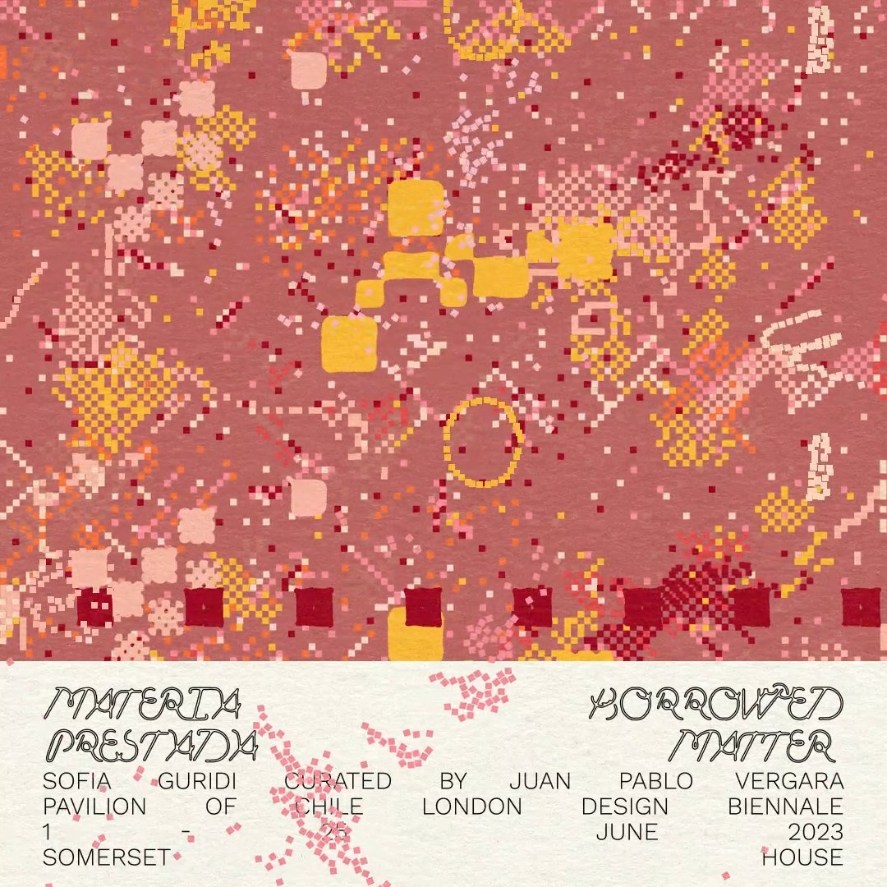
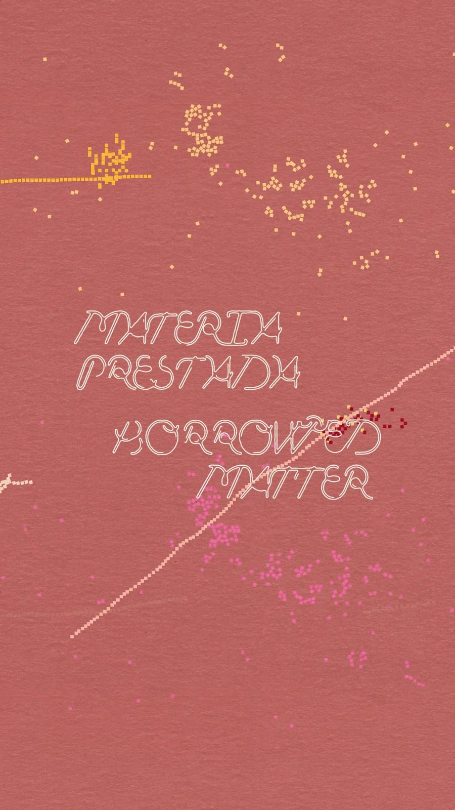
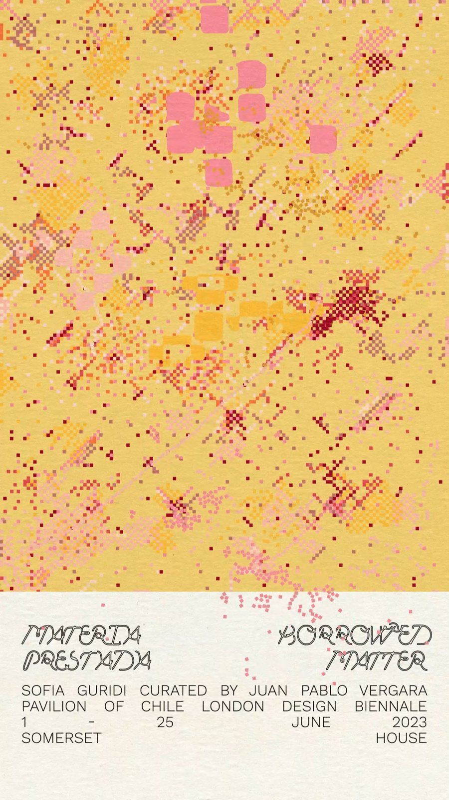
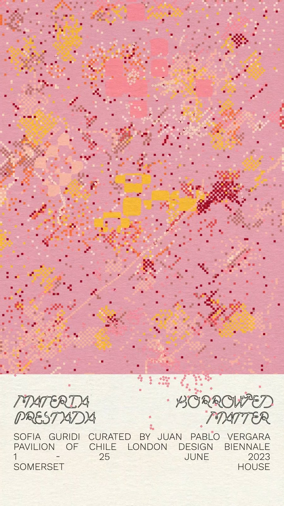

Materia Prestada




Animación y diseño de gráficas para el Pabellón de Chile en la London Design Biennale 2023, en colaboración con Gracia Fernández.




Animación y diseño de gráficas para el Pabellón de Chile en la London Design Biennale 2023, en colaboración con Gracia Fernández.